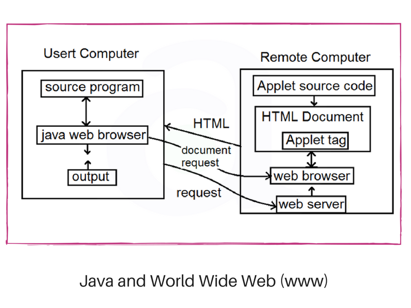

Java is very easy to learn and its syntax is simple, clean and easy to understand. According to Sun, Java languate is simple programming language because
Java is an oop language. Everything in java is an object. Object-oriented means we organize our software as a combination of different types of objects that incorporates both data and behavior.
Java code can be run on multiple platforms. For example, Windows, Linux, Sun Solaries, Maclos etc. Java code is compiled by the compiler and converted into byte conde. This byte code is platform independent code because it can be run on multiple platforms i.e. Write Once and Run Anywhere (WORA).
Java is best known for its security. With Java, we can develop virus free systems. Java is secured because
Class loader in Java is a part of the Java Runtime Environment(JRE). Which is used to load classes into the Java Virtual Machine dynamically.
It checks the code fragments for illegal code that can violate access right to objects.
It determines what resources a class can access such as reading and writing to the local disk.
Java is architecture-neutral because there are no implementation dependent features. For example, the size of primitive data types is fixed.
In C programming, int data type occupies 2 bytes of memory for 32-bit architecture and 4 bytes of memory for 64-bit architecture. However, it occupies 4 bytes of memory for both 32 and 64-bit architecture in Java.
Robust simply means strong. Java is robust because
Java is portable because it facilities us to carry the Java byte code to any platform. It doesn't require any implementation.
Java is faster than other traditional interpreted programming language because java byte code is "close" to native code. It is still a little bit slower than an interpreted language that is why it is slower than compiled languages (c, C++).
Java is distributed because it facilites users to create distributed applications in Java. RMI (Remote Method INvocation) and EJB (Enterprise JavaBeans) are used for creating distributed applications. This features of Java makes us able to access files by calling the methods from any machine on the internet.
A threade is like a separate program, executing concurrently. We can write Java program's that deal with many tasks at once by defining multiple threads. The main advantage of multi threading is that it doesnot occupy memory for each thread. It shares a common memory area. Threads are important for multi-media, web applications etc.
Java is dynamic language. It supports dynamic loading of classes. It means classes are loaded on demand. It also supports functions from its native languages. i.e. C, C++.
Java supports dynamic collection and automatic memory management(Garbage Collection).
Java was orginally designed for interactive television, but it was too advanced technology for the digital cable television industry at that time.
Java is strongly associated with the internet because of the first applicatoin program written in Java was HotJava.
Internet users can use Java to create applet programs & run them locally using a Java-enabled browser(HotJava).
Java applets have made the internet a true extension of the storage system os the local computer.

Application is stand-alonge Java program that runs with the support of a virtual machine in a client or server side. Also referred to as an application program, a Java application is designed to perform specifi function to run on any Java compatible Virtual Machine regardless of the computer architecture. An application is either executed for the user or for some other application program. Examples of Java application includes database programs, development tools, word processors, text and image editing programs, spreadsheets, web browswers etx.
Unlike a Java application, an applet is specifically designed to be executed with in an HTML web document using and external API. They are basically small programs more like the web version of an application that require a Java plugin to run on client browser. They run on the client side and are generally used for internet computing. We can execute a Java applet in HTML page exactly as we would include an image in a web page. when we see a HTML page with an applet in a Java-enabled web browser, the applet code gets transferred to the system and is finally run by the Java-enabled virtual machine on the browser.